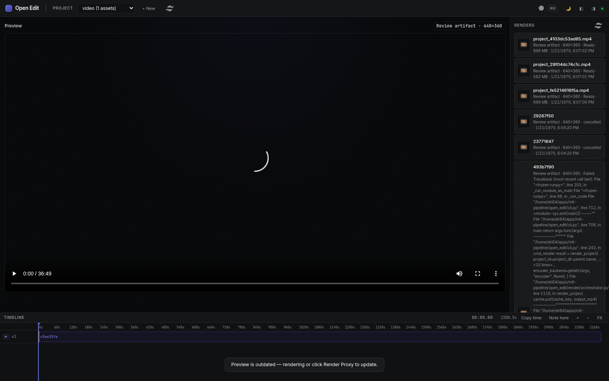
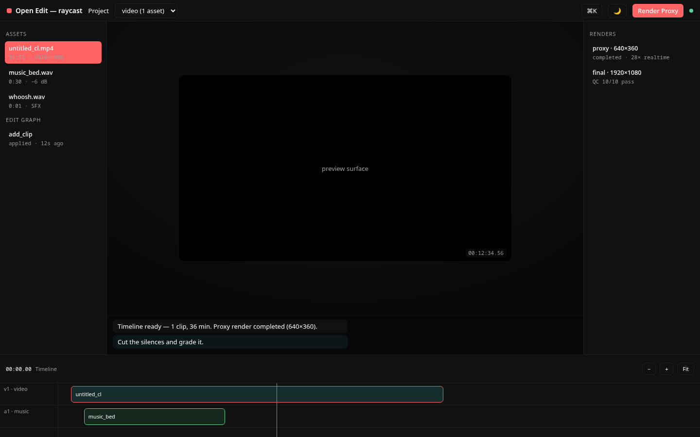
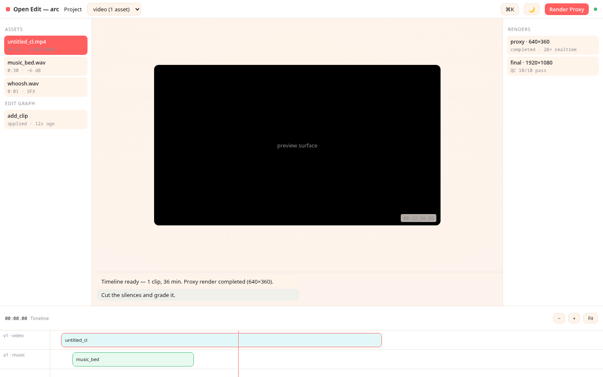
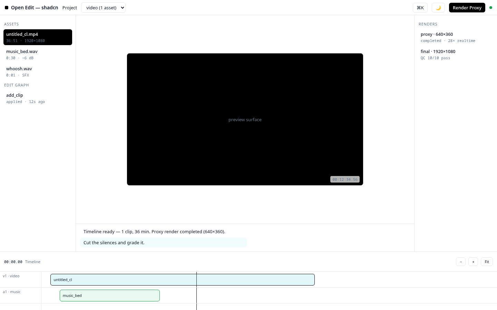
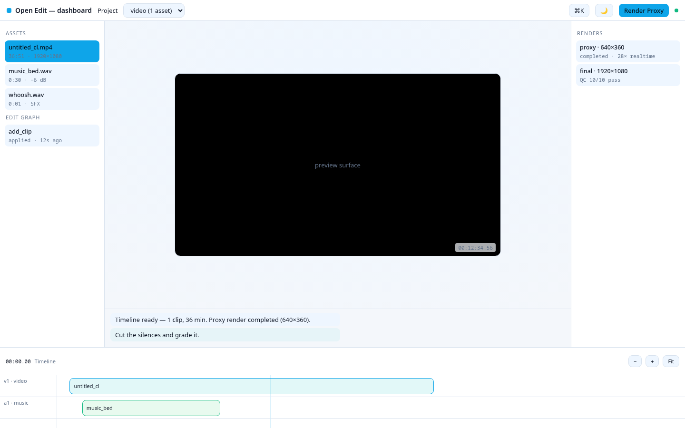

linear-app (CURRENT v1)
Ultra-minimal, precise, purple accent. Shipped + verified live.

raycast
macOS command-palette precision. Near-black blue-tinted, red accent, Inter + positive letter-spacing.

arc
Frosted glass over peach-coral gradient. Warm, squircle-soft, editorial serif display.

shadcn
Calm zinc/slate neutrals, near-black primary, 8px radius. The extensible baseline.

dashboard
Analytics console: cool surfaces, sky-blue accent, compact status-first cards.
Mocks show the OpenEdit studio shell (topbar, assets panel, preview, chat, timeline) rendered with each design system's real tokens.css.
Linear-app is a live screenshot of the actual app; the other four are token-faithful previews. Pick one (or something else) and I'll ship it as v2.